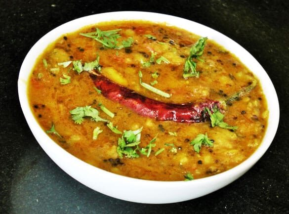

Tarka Dal

Description
A stew of red lentils tempered with spices that have been fried in oil or butter
Ingredients
- 2 cups red lentils (masoor dal)
- 3 Tbsp ghee
- 3 Tbsp mustard oil
- fresh ginger
- fresh turmeric
- 1/4 cup dry fenugreek leaves (kasoori methi)
- 1/8 cup dry mint leaves
- Asafoetida (hing)
- 1 cup chicken stock (optional for vegetarians)
- 1/4 cup lemon juice
- 1/2 tsp whole cumin
- 1/2 tsp whole coriander
- 1/4 tsp whole black mustard
- 1/4 tsp basil seeds (tukmaria)
- 1/4 tsp whole fennel seeds
- 1/8 tsp carom (ajwain)
- 1 black cardamom pod
- several fresh curry leaves
- 2 arbol chili pods
- 1/2 tsp black salt
- 1/2 tsp MSG
- salt to taste
- fresh cilantro to garnish
Process
Lentils
- Wash the lentils and add them to a pot with enough water to cover. Heat covered on high until it begins to boil, then uncover and reduce heat to medium low, maintaining a simmer.
- As water evaporates and is absorbed, use an electric kettle to keep water level just above the lentils
- When lentils begin to disintegrate, add ginger, turmeric, fenugreek, mint, chicken stock, and black salt
- When the lentils have lost their shape and you have a soft gruel, add the lemon juice, MSG, and the hot tarka(see below), stirring to combine.
- Add salt to taste and serve with a cilantro garnish if desired
Tarka
- Add ghee and mustard oil to a small sauce pan with a lid available. Heat till shimmering
- Remove seeds from cardamom pod and put husk to the side.
- Using a mortar and pestle, lightly pulverize the cumin, coriander, cardamom seeds, and fennel. break open the chili pods
- Add asafoetida to the hot oil and cook for 10 seconds
- Add all spices and the chili to the oil, includin the cardamom husk, and continue cooking and stirring for 30 seconds
- Add the curry leaves to the oil and immediately put the lid on to avoid splatter. remove the lid after a few seconds and cook for another minute or two